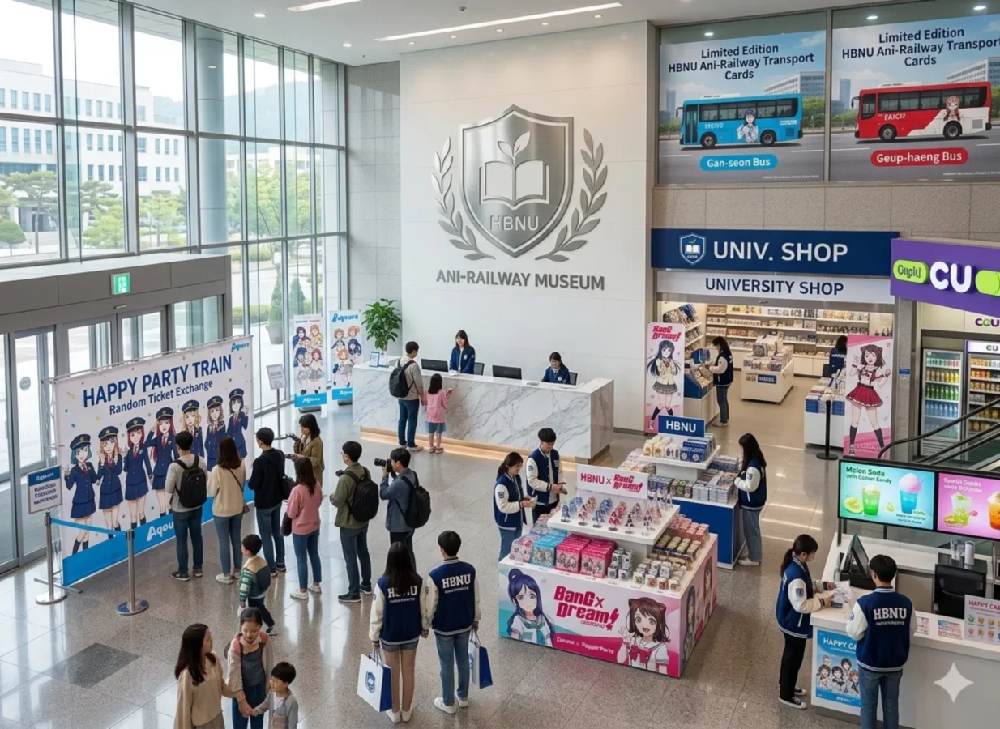
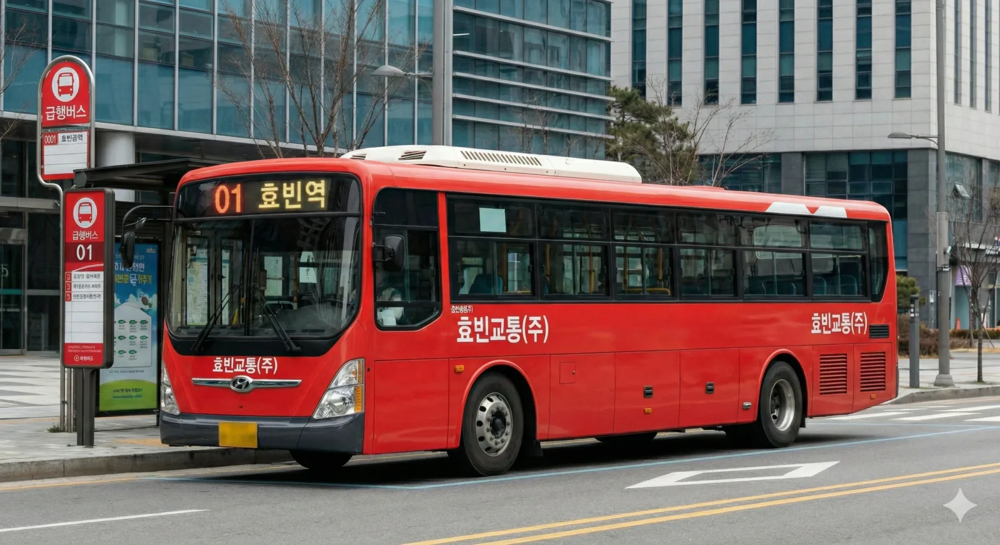
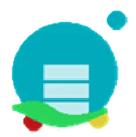

효빈광역시청
@HyobinCity
좋아요 85.2만개 • 팔로워 92.4만명 • 팔로잉 152명
@HyobinCity
🌟 내일을 향해 도약하는 효빈광역시 공식 페이스북입니다. 🌟
시민과 소통하고 공감하는 효빈의 다양한 소식을 전해드립니다!
대표전화: 079-591-2548
월~금 : 08:30~18:30 (시간외는 당직실로 연결)
팩스: 079-591-2547
당직실: 079-591-2546
(야간, 공휴일 24시간 운영)





🎊 [공지] 제4회 효빈 애니메이션 페스티벌(HAF) 개최 확정! 🎊
"온 도시가 성지가 된다!"
여름을 뜨겁게 달굴 서브컬처의 축제, HAF가 돌아왔습니다! 이번 축제는 시청 광장과 고송신도시 전체를 아우르는 역대 최대 규모로 진행됩니다. 코스프레 퍼레이드, 성우 초청 특별 라디오 공개방송, 그리고 한정판 굿즈 판매까지!
특별 교정 센터(The Factory)에서 땀 흘려 생산한 고퀄리티 한정판 '치카 인형'과 '귤 박스 패키지'도 현장에서 판매될 예정이니 많은 관심 부탁드립니다. 😊
#HAF
#효빈애니메이션페스티벌
#효빈광역시
#특별교정센터수공업
드디어 HAF 시즌이네요!!! 이번 코스프레 퍼레이드 라인업 미쳤다던데 벌써부터 심장 뜁니다 ㅠㅠ 귤 박스 패키지 오픈런 대기탑니다!!
아오 진짜 오타쿠들 냄새나서 살겠나 ㅡㅡ 이런 쓰레기 행사 당장 취소해라. 내가 왕년에 우리 아빠 빽으로 효빈시 먹을 뻔했는데 아오 빡쳐. 그깟 만화 쪼가리가 뭐라고 세금을 펑펑 쓰냐?!

야 ㅋㅋㅋ 너 귤박스 포장이나 마저 해라. 할당량 다 못 채우면 오늘 무한루프 BGM '키세키' 24시간 연장이다 ㅋㅋㅋㅋ 아직도 정신 못 차렸네
@윤재훈 수감자님, 특별 교정 센터(The Factory) 내 스마트폰 허용 시간은 10분입니다. 현재 무단으로 SNS에 접속하신 것이 적발되어 스마트폰 압수 조치 및 금일 야간 '치카 인형 눈알 붙이기 500개' 특별 작업이 배정되었습니다. 감사합니다. ^^

시청 관리자님 컷 나이스 ㅋㅋㅋㅋㅋㅋㅋㅋ 눈알 500개 ㅋㅋㅋㅋㅋㅋㅋㅋㅋㅋ
🎉 [공지] 박효빈 시장 취임 2주년 기념 시민과의 대화 성료! 🎉
"시민이 곧 효빈의 힘입니다!"
1996년생이라는 젊은 패기와 열정으로 달려온 박효빈 시장이 취임 2주년을 맞아 진행한 '시민과의 대화'가 무사히 마무리되었습니다.
과거 2세대 버스(일명 똥색 버스) 시절의 아픔을 완전히 극복해낸 3세대 시내버스 '스타더스트 작전'의 성과를 되짚어보고, 앞으로 뻗어나갈 철도망에 대한 논의를 나누었습니다. 🏃♂️💨
시민 여러분의 따뜻한 격려와 성원에 항상 감사드립니다. 앞으로도 변함없이 발로 뛰며 소통하는 시장이 되겠습니다! 교통부터 문화까지, 효빈의 밝은 미래를 함께 만들어갑시다. 😊🏃♂️
쯧쯧... 나 때는 말이야 버스 색깔 똥색 하나로 싹 통일해서 페인트값 아끼고 예산 튼튼했는데, 어린 놈의 시장이 만화 쪼가리나 보면서 시 예산을 거덜내고 있구만! 지하철도 땅 꺼진다고 파지 말라니까 기어코 파서 돈 낭비를 해!! 내 두청운수를 돌려내라!!

할아버지, 폰 압수당하기 전에 조용히 하세요. 두청운수 75인승 과적 버스에서 그 딱딱한 플라스틱 시트에 앉아서 허리 디스크 걸릴 뻔한 거 생각하면 아직도 자다가 이가 갈립니다 ㅡㅡ

아직도 정신 못 차리셨네 ㅋㅋㅋ 버스 요금 5배로 폭리 취하던 건 기억 안 나시나 봅니다? 영감님이 해먹은 돈, 지금 시장님이 서브컬처 사업 대박내서 재정 자립도 1위 찍고 있습니다 ^^7 수고링~
🚌 [안내] 3세대 효빈 시내버스 '스타더스트 작전' 색상 총정리! 🚌
🔹 간선버스 (#01B7ED Sky Blue) - 오사카 시즈쿠
🔸 지선버스 (#37B484 Jade Green) - 미후네 시오리코
🟡 순환버스 (#E7D600 Pastel Yellow) - 나카스 카스미
🔴 급행버스 (#D81C2F Scarlet Red) - 유키 세츠나
🟠 좌석버스 (#FF5800 Vivid Orange) - 미야시타 아이
🔵 광역버스 (#485EC6 Royal Blue) - 아사카 카린
🟣 마을버스 (#A664A0 Violet) - 코노에 카나타
🟢 공항버스 (#84C36E Light Green) - 엠마 베르데
🌙 시티투어 (#7777AA Navy) - 시이나 타키



간선버스 파란색 너무 예뻐요!! 오사카 시즈쿠 최고💙 옛날 두청운수 시절 생각하면 어우...
🌟 내일을 향해 도약하는 효빈광역시 공식 페이스북입니다. 🌟
시민과 소통하고 공감하는 효빈의 다양한 소식을 전해드립니다! 교통부터 문화예술까지 새로운 변화를 선도하는 효빈광역시청의 페이지를 팔로우하고 가장 빠른 소식을 받아보세요.



회원님을 언급한 게시물이 여기에 표시됩니다.
아직 리뷰가 없습니다.
공개된 동영상이 없습니다.
검색 결과를 불러오는 데 실패했습니다 (데모 버전).